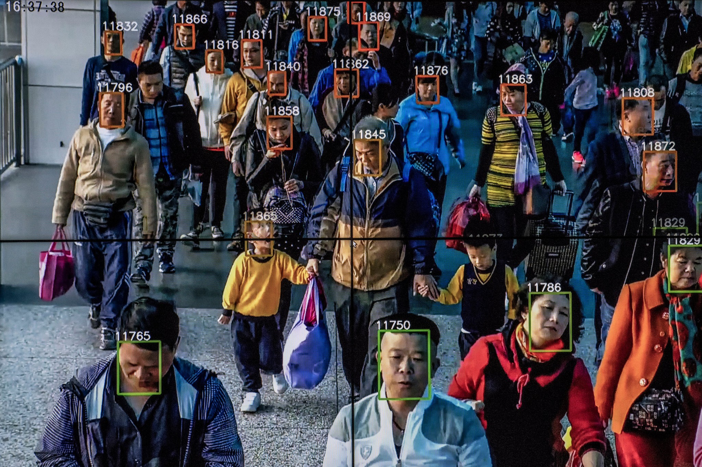
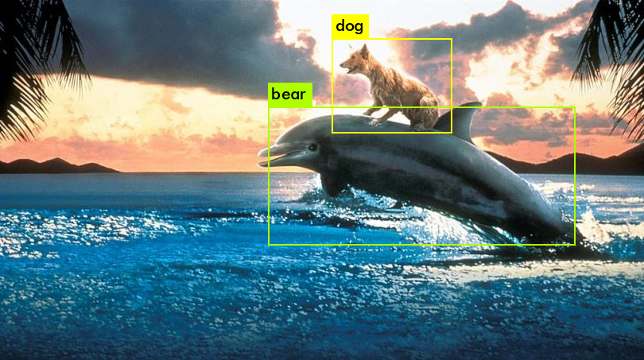
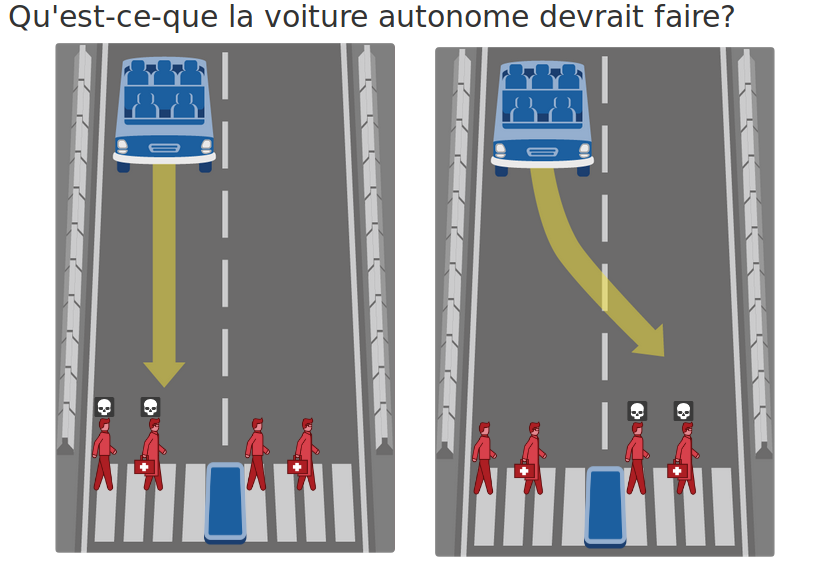
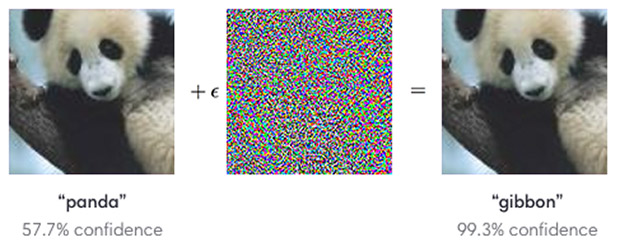
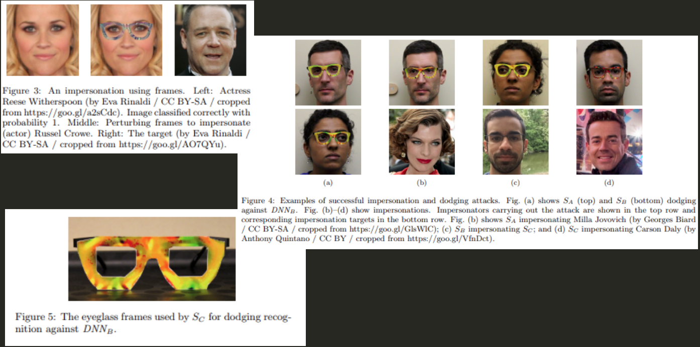

éTHIQUE et atTAQUES, l'autre face du machine learning
Qui suis-je ?

Le machine learning aujourd'hui
Le "technologisme" actuel
La fiction
La réalité
Pourquoi l'éthique ?
Algorithmes publics (parcoursup) ?
Qui est responsable ?
Que dit la loi ?
Rien
Est-ce vraiment de l'AI ?
Les recommandations
Sont-elle faites pour le consommateur ou pour la plateforme elle-même ?
Trop de données ?
Test à Londres en juillet 2018 : 98% de faux positifs
Reconnaissance faciale
For the first time, the world is on the threshold of technology that would give a government the ability to follow anyone anywhere, and everyone everywhere. It could know exactly where you are going, where you have been and where you were yesterday as well. And this has profound potential ramifications for even just the fundamental civil liberties on which democratic societies rely. Before we wake up and find that the year 2024 looks like the book “1984,” let’s figure out what kind of world we want to create, and what are the safeguards and what are the limitations of both companies and governments for the use of this technology.
Pourcentage de confiance
Toujours analyser ses résultats
"L'algorithme, c'est une opinion encapsulée dans du code"
Interpréter les résultats

L'apprentissage automatique est "conservateur"
Entraîné sur les données du passé
Les données sont biaisés, sauf si on prend le temps de travailler les données d'entraînement
Les biais
Sexistes
Raciaux
Le monde est blanc, le monde est beau
D'autres exemples d'utilisation…
Détection de l'orientation sexuelle en fonction du visage
Le site de référence : Awful AI
Des solutions ?
Un serment d'Hippocrate
Des valeurs, et une checklist, pour prise de conscience
Rédigé collectivement sur Framavox, par Data for Good
5 valeurs
- Intégrité scientifique et rigueur
- Transparence
- Équité
- Respect
- Responsabilité et indépendance
Une question de culture

L'IA "responsable"
Conforme aux règles juridiques
Conforme aux valeurs éthiques
Robuste
Justement, les attaques…
Les réseaux "adversaires"
Des pokemons… aux voitures autonomes
Le monde est un grille-pain

Transformer les images

Transformer les images

Voir toute la présentation de @TiffanySouterre au DevFestToulouse
Les voitures autonomes

Camouflage : le projet CV Dazzle

Essentiellement du maquillage
Toujours plus loin…
Mais la Chine peut déjà identifer les gens sur leur façon de marcher…
Des solutions ?
Nous sommes des apprentis sorciers
Des questions ?
Slides sur https://huit.re/CdL-tic-et-tac